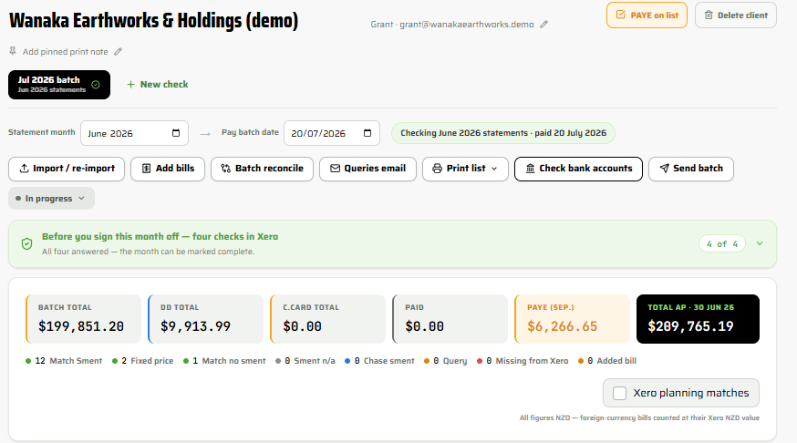
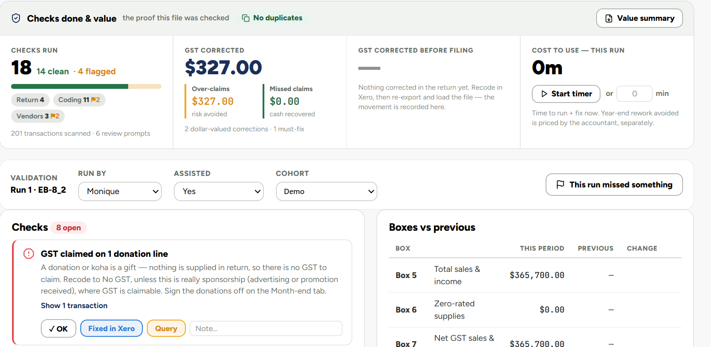

Every month I check your supplier statements against Xero before you pay and your GST before it is filed. I do it with checking tools I built specifically for tradies. The AI does the grunt work, the number crunching on how the month performed. I do the human judgement: what it means, what to fix and what to tell you.

You and your bookkeeper carry on as normal: bills in, Xero kept up to date, GST prepared. Once a month I step in and check the work before the money goes out and before the return goes to IRD. Nothing changes on your side except that someone is looking.
Both checkers were written by me to do the checking I do every month across a lot of small trade businesses. They run on my own machine, your figures do not go to the cloud. I built in guardrails and double checks, then I check the key figures against Xero myself.
Takes your supplier statements and what is in Xero and tells me where they disagree, before the payment run.
Checks the GST return and the month-end figures against the P&L and balance sheet before anything is filed.

What the month made against the last three and the year, what drove it, cash and money owed, what was corrected and what to watch. Written so an owner reads it in five minutes. Your accountant can get the same picture if required. Monthly back-costing reporting, what each job made, is an option on request.

You show me last month in Xero. I run the checks in front of you and we see together what they find. No cost, no obligation.
The two checks every month, the report if you want it, back costing if you ask for it. Fixed monthly fee, quoted, no lock-in.
Each month the checks get run before anything is paid or filed. That is the month end, not a job on top of it.
No. It checks the work before the money goes out. Plenty of good bookkeepers are working from what they are given, this catches what nobody was in a position to see.
In my experience they are pleased. What reaches them at year end is cleaner and the corrections were made in the right period rather than found afterwards.
The tools run on my own computer and your figures stay in it. Your information is handled the same way as any other bookkeeping client of Admin for Tradies: paid AI subscriptions that do not train on your data, files on my OneDrive and every key figure checked against Xero by me.
You can try it on the demo. It is not for sale yet; it may be available commercially in the future. For now the checks are something I run for you.
Then you have a clean month and you know it. In practice, the first run usually finds something.
No. It works with your Xero as it is. If something about the way the books are set up is making the checking harder, I will tell you, but that is a conversation, not a condition.
Try this. Ask your own AI about me. Download the briefing pack and ChatGPT, Claude, Copilot or Gemini can talk you through what I do, what it costs and whether I am a fit for your business.
Download the AI briefing packI will show you what the checks find on your own numbers, at no cost and with no obligation.
Name, email, one line about the books. I will come back to you within a working day.